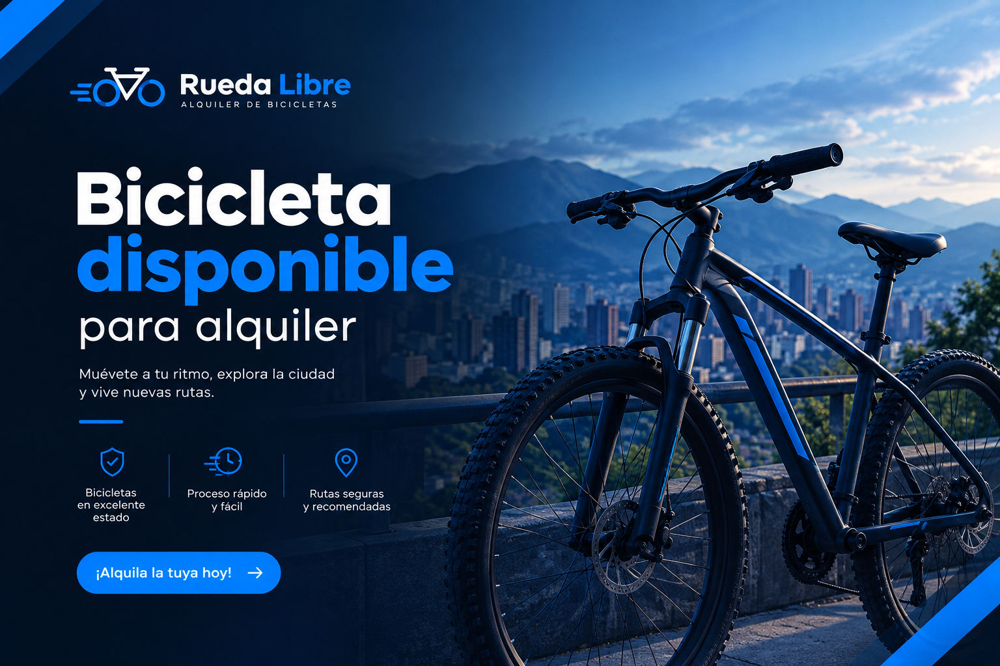
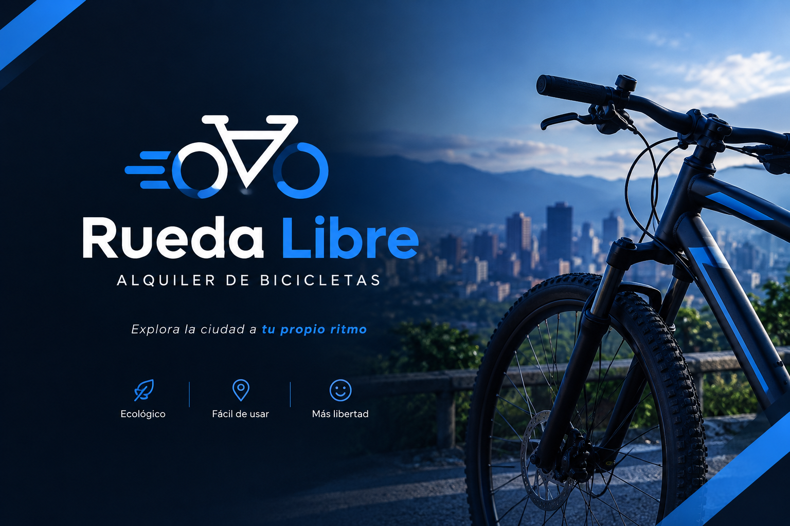
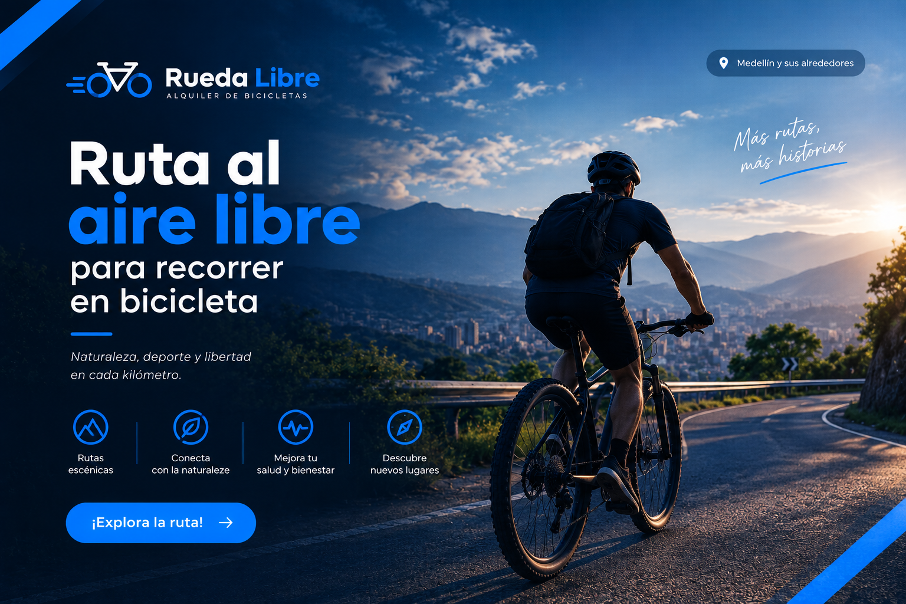

Alquiler de bicicletas urbanas

Alquila una bicicleta para recorrer la ciudad. Incluye casco y candado para disfrutar del recorrido con mayor tranquilidad.
Alquila tu bicicleta y disfruta de la ciudad. Encuéntranos aquí.

En Rueda Libre ofrecemos alquiler de bicicletas para que disfrutes de nuevas aventuras. Nuestro objetivo es facilitar una forma de transporte cómoda, económica y ecológica. ¡Muévete libremente y descubre nuevos lugares!

Alquila una bicicleta para recorrer la ciudad. Incluye casco y candado para disfrutar del recorrido con mayor tranquilidad.

Descubre nuevos lugares y disfruta de la naturaleza mediante recorridos en bicicleta. Una experiencia diferente para compartir.
Puedes alquilar tu bicicleta por unas horas o por varios días, según tus necesidades. Ofrecemos opciones flexibles para estudiantes, turistas y amantes del ciclismo.
Sigue estos cuatro pasos para alquilar tu bicicleta:
¿Quieres alquilar una bicicleta? Contáctanos y comienza tu próxima aventura.
Correo: hola@ruedalibre.example